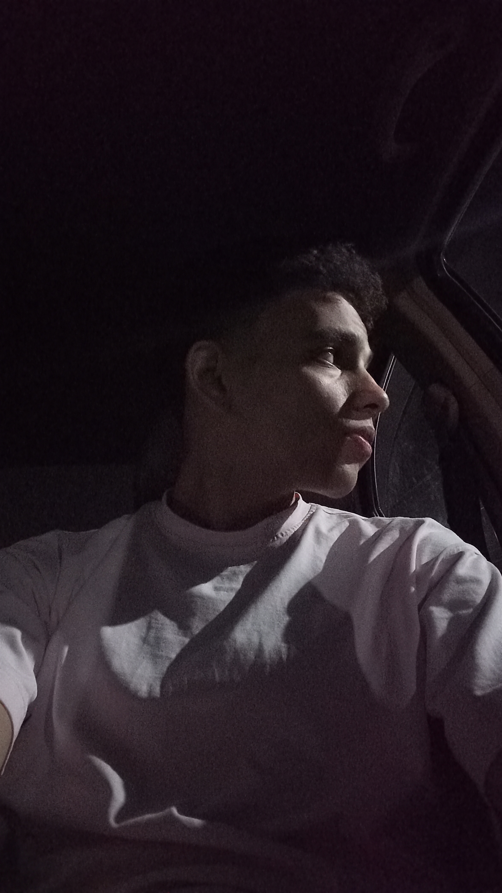

Crime / Drama
The Sopranos
Human nature, contradictions, and the things we hide.

NASAFor the films that stay with you, the songs that understand you, the books that change your perspective, and the thoughts that only arrive after midnight.
Not quite here, not quite there. Just a personal archive of stories, sounds, questions, and moments worth keeping. A small corner of the internet to call my own.
A place for the things that make me think, the details I notice, and the ideas I haven't completely figured out yet.

Some stories end with the credits. Others follow you home and make you think about them for days.
Human nature, contradictions, and the things we hide.

Power, consequence, loyalty, and the cost of ambition.

How far can a person change, and when does the change begin?

Some questions are harder than their answers.

Time, distance, and what connects us across both.

The best stories don't end at the credits.
Songs for late nights, long thoughts, and feelings that are easier to hear than explain.

Stories hidden inside the details.

A sound and a stage presence that became unforgettable.

For walks with nowhere to go and thoughts that won't settle.

Some songs feel less like music and more like a place.
Books can be a way out, a way in, or a mirror you weren't expecting to find. This is a place for stories and ideas that leave something behind.


The books I'm exploring, one page at a time. A few chapters closer to a different perspective.

Stories and ideas worth returning to, even after the final page.

Passages that say something I've felt but never quite managed to explain.

Thoughts, questions, and reflections that begin when the reading ends.
“Maybe growing up is learning to live with the things you can't quite explain.”
A changing collection of thoughts about time, identity, stories, and everything in between. Not every thought needs a conclusion.
Still figuring things out. Still collecting stories. Still somewhere in between.

I think there is always more to a person than what they choose to show. I'm interested in the details, the contradictions, and the thoughts people rarely put into words.
I would rather ask a difficult question than settle for an easy answer. Understanding matters more to me than pretending to know everything.
People can be strong and uncertain, hopeful and afraid, all at once. Maybe understanding ourselves begins when we stop trying to be one thing.
Not every question needs an immediate answer. Some are worth carrying with you.
Are we the person we believe ourselves to be, the person others see, or something in between?
Do we become different people, or discover parts of ourselves that were always there?
Is meaning something we find, something we create, or something hidden in the moments we overlook?
How much of ourselves can we share, and how much will always remain ours alone?
“You don't have to have everything figured out to be moving forward.”
“Sometimes understanding yourself begins with admitting that you don't.”
Different platforms, same person.


Random thoughts, occasionally coherent.
Somewhere in Between.
CURATED BY NASA